ISTRAM®BIM, dolgu kaplamalarını çeşitli varyantlarda tanımlamaya olanak tanır, geometriye ek olarak ilgili metrajları da oluşturur, ve [SAĞ / SOL] tarafta farklı geometriye sahip BAŞLANGIÇ KM'si ve BİTİŞ KM'si ile farklı kesimler tanımlanabilir.
Bu menü, farklı bir malzeme ile doldurulan bir dolgu bölgesini tanımlamayı sağlar:
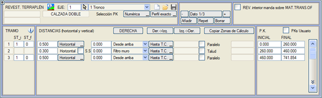
Dolgu kaplaması verileri .vol dosyasında saklanır, ancak  ve ve 
düğmeleri aracılığıyla .trm uzantılı dosyalarda da arşivlenebilir veya bu dosyalardan geri yüklenebilir.La opción Kullanıcı KM'leri seçeneği, KM'lerin kullanıcı değerleriyle girilmesine olanak tanır. Bu seçenek etkinleştirilebilir/devre dışı bırakılabilir ve aktivasyon durumu .vol dosyasında saklanır.
 İÇ KAPLAMA, MENFEZ GEÇİŞ MALZ. üzerine önceliklidir seçeneği: bir iç dolgu kaplamasının bir Menfez Geçiş malzemesi ile bir arada bulunması durumunda önceliği belirler ve kaplamaya öncelik verilmesi istendiğinde kullanılır. İÇ KAPLAMA, MENFEZ GEÇİŞ MALZ. üzerine önceliklidir seçeneği: bir iç dolgu kaplamasının bir Menfez Geçiş malzemesi ile bir arada bulunması durumunda önceliği belirler ve kaplamaya öncelik verilmesi istendiğinde kullanılır.
Hesap Bölgelerini Kopyala seçeneği ile Hesap Bölgeleri menüsündeki kesimleri otomatik olarak kopyalamak mümkündür, ayrıca verileri sağdan sola Sağ->Sol ve tam tersi Sol->Sağ kopyalama imkanı da sunar.
Geometri aşağıdaki değerlerle tanımlanır:
| Başlangıç ve bitiş tip kesiti |
Kaplamanın iç yüzü, herhangi bir tip kesitin dolgu geometrisi kullanılarak tanımlanır. Eğer bitiş tip kesiti 0 ise, geometri tüm kesim boyunca sabittir, aksi takdirde her iki kesit arasında bir geçiş yapılır. |
| Yatay mesafe |
Kaplamanın kalınlığı, dolgu şevine yatay veya dik olarak verilebilir. Yeterince büyük bir değer verilirse, kaplama eksene kadar ulaşır; bu her iki taraftan yapılırsa, tam bir dolgu seviyesi oluşturur. Bu durumda, kaplama tavanının terasman eğimiyle yapılmasını sağlayan Paral. (paralel) seçeneği devreye girer. |
| Düşey mesafe |
Kaplamanın yüksekliğidir ve çeşitli şekillerde tanımlanabilir:
- 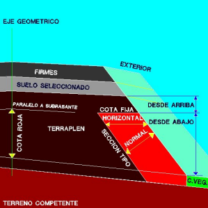Yukarıdan: Seçme malzemenin veya terasmanın tabanından ölçülür. Bu değer sıfır ise, kaplama seçme malzemeye veya terasmana kadar götürülür.
- Aşağıdan: Arazi yüzeyinden ölçülür. Değer, dolgu yüksekliğini aşarsa, seçme malzemede veya terasmanda durur.
- Sabit kot: Kret belirtilen kottadır. Eğer dolgu şev eteği bu kotun üzerindeyse, kaplama olmaz. Eğer seçme malzeme bu kotun altındaysa, kaplama dolgunun tüm yüksekliğinde tam olarak yapılır.
- Kırmızı kot farkı: Bu tip, ne tip kesit ne de yatay mesafe gerektirir. Dolgu tabanında, tavanı terasmana paralel olan ve kalınlığı eksendeki araziden ölçülen bir katman oluşturur. Eğer terasman veya fazla kazı eksendeki arazinin altındaysa, oluşturulmaz. Eğer terasman veya fazla kazının eksendeki arazi üzerindeki yüksekliği istenen yükseklikten az ise, bu katmanla terasmana veya fazla kazıya kadar her şey oluşturulur.
- Bu tür kaplama için üst yüzey için aşağıdaki olanaklara sahibiz:
- Terasmana/seçme malzemeye paralel.
- Araziye paralel.
- Yatay.
Eğer Dolguya Paralel kutucuğu etkinleştirilirse, o zaman bu kaplama arazi yüzeyine paralel olacaktır.
İki kırmızı kot farkı tanımlanmalıdır: biri başlangıç KM'si için, diğeri bitiş için. Orta bölgede birinden diğerine doğrusal bir geçiş yapılır.
Diğer kaplamalar gibi, her iki taraf için bağımsız olarak tanımlanabilir. Böylece, kesitin tüm genişliğinde tam bir katman isteniyorsa, veri sağ ve solda tekrarlanmalıdır.
Her iki tarafta da oluşması için, o tarafın dolguda bitmesi gerekmez, sadece kırmızı kot farkının (eksende) pozitif olması yeterlidir.
- 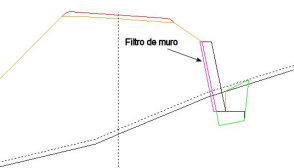Duvar arkası filtresi:
Dolgu istinat duvarı tanımıyla birleştirilir. Bu malzeme, yatay olarak ölçülen genişliğiyle tanımlanır, duvarın sırtına dayanır ve dolgu kaplaması menüsünde tanımlandığı gibi doğal veya sağlam zemine kadar iner. Ayrıca duvar filtresinin pabuca kadar inmesi de mümkündür.
Negatif sırtlı bir dolgu istinat duvarı olması durumunda da duvar filtresi komutunu kullanmak mümkündür.
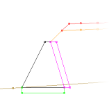
Bu durumda, kaplamanın şevi için bir değer tanımlanabilir, eğer şev değeri sıfır ise dikey olacaktır .
Bu durumda filtre genişliği duvarın tabanında ölçülür. Ayrıca, seçme malzemeler üzerinde duvar filtresinin öncelikli olması için seçenek etkinleştirilebilir.
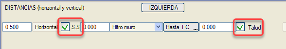
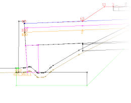
- Dış:
Kullanabilmek için, başı sabit, banket kenarından veya palye kenarından bağlanacak bir dolguya sahip bir tip kesit tanımlanmalıdır. Genellikle vektörel olarak tanımlanır ve o zaman, vektörün üst bölümü kaplama kalınlığını simüle etmelidir. Aynı KM'de ve aynı tarafta bir iç ve bir dış kaplama bir arada bulunabilir.
Bir dış kaplama için Dolgu Yüksekliği seçeneği işaretlenmişse, söz konusu kaplama sadece bildirilen minimum ve maksimum yükseklikler arasında uygulanacaktır. Bu aralığın dışında kaplama oluşturulmaz.
Paralel kutucuğu etkinleştirildiğinde, dış kaplama belirli bir mesafede dolguya paralel olacaktır. Mesafe, dolgu şevine yatay, dik veya gerçek olarak verilebilir.
Dış kaplama için iki varyant vardır:
- Dış terasman:
Dış'a benzer, ancak kaplama terasman drenajına bağlanır.
- Dış seçme malzeme: Dış'a benzer, ancak kaplama seçme malzemenin taban drenajına bağlanır.
- Dış kod: Kaplama, 68 nolu yüzeyin belirttiğimiz kodundan başlar. Paralel şev seçeneğini etkinleştirebilir veya devre dışı bırakabiliriz.
- Dış sabit kot: Dış kod'a benzer, ancak kaplama önceden belirlenmiş bir kotta başlar.
Dış kaplamalar için bir bitiş kodu tanımlanabilir. Bu, örneğin bir yarma kesitinde, palyeden hendek tabanına (bitiş kodu 600) kadar bir dolgu kaplaması yapmayı sağlar. Eğer kod kesitte yoksa, kaplanmaz. Eğer kod bir kesitten diğerine değişiyorsa, aynı KM aralığı için farklı bitiş kodlu birkaç veri satırı tanımlanabilir. Aynı tarafta bir dolgu kaplaması (hendeğe kadar) ve bir yarma kaplaması (hendekten sonra) bir arada bulunabilir.
Eğer bitiş kodu olarak 601 tanımlanmışsa, o zaman kaplamanın eteği bitkisel toprağa (veya Dolguda S.Z.'ye Kadar seçeneği etkinse sağlam zemine) kadar götürülür. Eğer bir sıyırma payı da tanımlanmışsa ve bu kaplama eteğine kadar ulaşmıyorsa, ulaşması için uzatılacaktır.
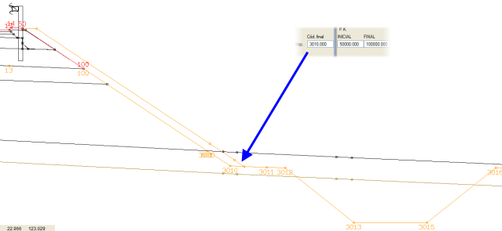
- İç Paralel:
Tip kesit gerektirmez. İç paralel tipindeki dolgu kaplaması, hendeğin önünde bir dolgu şevi görünen yarma kesitlerinde de çalışacaktır. (Örn. H/D kontrolü hendek tabanında olan ve bu hendek tabanının terasmanın altında olduğu kesitlerde, arazinin terasman veya seçme malzeme tabanı ile hendek tabanı arasında olduğu bölgelerde)
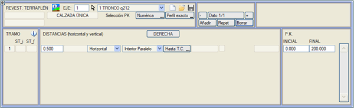
- Dış SM Şev:
Seçme Malzemeden Dış Kaplama ve Şevli: Seçme Malzemenin drenajından sonra eğimini uzatan palye veya omuzun tavanı için bir genişlik ve zemine inmek için şev tanımlanır.
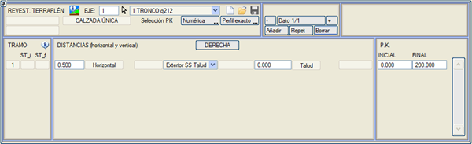
- Dış SM1 Şev:
Birinci Seçme Malzeme Katmanından Dış Kaplama + Şev: [Dış SM Şev] gibidir, ancak birden fazla Seçme Malzeme katmanı varsa, en üsttekinden başlar.
Öte yandan, dolgu kaplaması, [S.Z.'ye Kadar] düğmesi bırakılırsa sağlam zemine kadar veya [D.Z.'ye Kadar] konumuna getirilerek doğal zemine kadar ulaşabilir.
Son olarak, aşağıdaki hususlar dikkate alınmalıdır:
- Bazen, yatık şevlerde, şeve dik yatay mesafe ve 0 düşey mesafe ile, iç şev eksenin diğer tarafındaki terasmanı keser; o zaman geometrik eksenle kesişim hesaplanır ve iç şev o noktadan çizilir.
- Eğer drenaj katmanlı bir dolgu iyileştirmesi varsa, kaplama bu drenaj katmanına oturur.
- Bir duvarlı kesit üzerinde bir dış dolgu kaplamasına izin verilir. Kaplama genişliği, duvar genişliğinden büyük olmamalıdır. Kaplama, duvarın kretinde kesilir.
- Sabit Kot Palye: Bu mod, burada tanımlanan genişlik ve eğime sahip bir palye ekleyerek dolgu şevini değiştirir ve palyenin ucu belirtilen kottadır, kaplama tanımlanan eğimle eksene kadar ulaşır. Kaplamanın tabanı bir iyileştirme ile tanımlanır, iyileştirme kazısının tabanına veya tanımlanmışsa drenaj katmanının tavanına oturabilir.
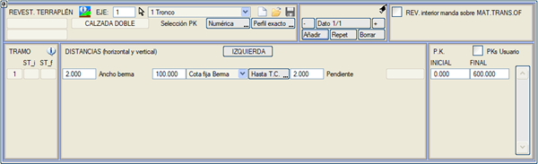

|
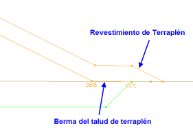Not:
Dolgu kaplaması yapılırken, dolgu şevinin araziye palye bölgesinde değdiği bir durumla karşılaşırsak, kaplama palye şeviyle uzatılmaz, bunun yerine palyeden önceki kesimin şeviyle uzatılır.
|
|